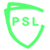
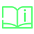
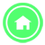
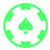
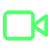

<button [routerLink]="['/home/tabs/feedback']" class="feedback-bt" style="z-index: 999;">
  <ion-img class="feedback-img" src="../../assets/images/feedback.png"></ion-img>
</button>

<ion-tabs #myTabs (ionTabsDidChange)="getSelectedTab()">
  <ion-tab-bar class="p-10" slot="bottom">
    <ion-tab-button tab="psl">
      
      
      <ion-label color="light">PSL</ion-label>
    </ion-tab-button>
    <ion-tab-button tab="learn">
      
      
      <ion-label color="light">Learn</ion-label>
    </ion-tab-button>
    <ion-tab-button tab="home">
      
      
    </ion-tab-button>
    <ion-tab-button tab="play">
      
      
      <ion-label color="light">Play</ion-label>
    </ion-tab-button>
    <ion-tab-button tab="watch">
      
      
      <ion-label color="light">Watch</ion-label>
    </ion-tab-button>
  </ion-tab-bar>
</ion-tabs>